A tour of computer system
ints are not integers, floats are not Reals
1 | kit in ~ ➤ lldb |
1 | > 0.1 + 0.2 |
一切的信息 都是 bits + context
::hello.c::
1 | #include <stdio.h> |
上面这段代码本质上来说就是一段bits（比特流），01010101….，8-bit 一个（bytes）字节，每个字节 表示一些程序中的某些文本字符
大多数的计算机系统使用 ASCII 标准 来表示文本字符，上面那段代码 就可以这样表示：
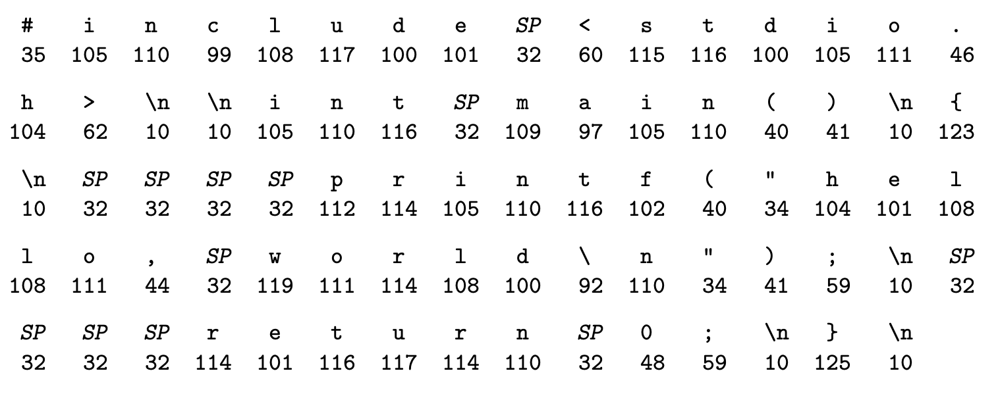
这个hello.c 就已以一段字节的形式存储在一个文件中。每个字节用一个整数值来表示。比如 # 号 用 数字35 来表示。etc
从 hello.c 这个例子 可以窥探到一个计算机系统的基本思想：系统中所有信息，包括 硬盘文件，存储在内存中的程序，内存中的用户数据，网络中的数据交换等等 都是一串比特流。唯一一个区别 只是 我们查看这些信息的方式。比如在不同的上下文中，一串相同的比特流可能代表整数，浮点数，字符串或是一行机器指令。
程序会被其他程序转换成不同的形式
hello.c 诞生之初就是一个高级程序，因为这种形式很容易被人们阅读 和 理解，但是 为了在计算机系统中执行这段程序，这段代码必须被其他程序翻译成一段低级的机器语言指令，这段机器指令被打包成一个可执行程序文件。
在 unix 系统中，有个叫 compiler driver (编译驱动) 的程序会做这些事
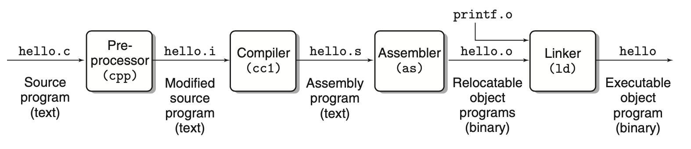
linux> gcc -p hello hello.c
预编译阶段：cpp（预编译处理器）从文件头开始读，找 # 号开头的地方，比如
#include <stdio.h>在文件第一行，会告诉预编译器去读 系统头文件stdio.h然后插入到当前文件中，这步结束后 会变成 hello.i 文件编译阶段：cc1（编译器）将 hello.i 翻译成 包含 一个指令集的程序 hello.s，长下面这个样子：
1
2
3
4
5
6
7. 1 main:
. 2 subq $8, %rsp
. 3 movl $.LC0, %edi
. 4 call puts
. 5 movl $0, %eax
. 6 addq $8, %rsp
. 7 ret汇编 接下来 汇编程序将 hel lo.s 翻译成机器指令集，打包成二进制文件（ relocatable object program），存储到 hello.o 文件中
链接 。可以看到 hello 中调用了一个 printf 方法，这个方法是在 c 标准库中的一个方法，这个阶段就会将用到的方法整合到一起最终 打包成一个可以扔到内存里运行的可执行文件
处理器在内存里干活
1 | linux> ./hello |
终端里面输入 ./hello ，如果输入的第一个单词不是内建的 shell 命令，那么 shell 就会假设这是一个可执行文件的名字，然后加载到内存中，执行它，等待执行结束。
硬件是如何组成一个系统的呢
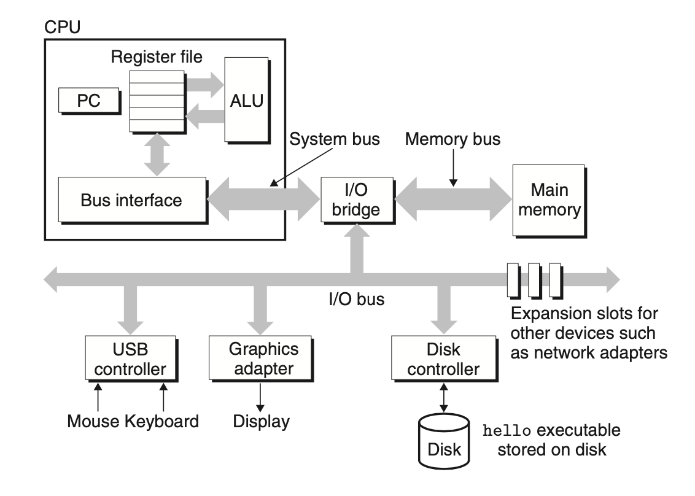
为了知道 hello 运行的时候 计算机里面都发生了什么，我们要看上面这张图。
bus
贯穿整个系统的搬运工，以传递信息字节为生。
I/O
所有的外设（与外界沟通的桥梁），键盘 鼠标 硬盘 显示器等。
每个外设都会通过适配器或控制器 会链接到 I/O bus 上
main memory 内存
一个暂时性的存储设备，用来存放正在执行的的程序内容和相关数据，物理的角度看，内存包含 DRAM（dynamic random access memory） 芯片，逻辑上看，是一个内存地址从零开始的线性字节数组。
processor 处理器
central processing unit 中心处理单元，简称处理器。是处理存储在内存中的指令引擎
从系统加电开始，一直到断电，处理器会不间断的 重复的 执行pc（program counter）指到的指令，然后更新 pc，继续执行下一个，（pc好厉害 指哪打哪）
处理器开始操刀执行前是有一个很简单的指令执行模块去引导的，叫做instruction set architecture。这个模块里，指令的执行有着严格的先后顺序，每执行一个简单的指令都要经过一系列的操作步骤。
pc指到哪里，处理器就读哪块的指令，解析指令，执行指令操作，然后更新pc指向（更新到哪就不一定了，内存不一定是连续的嘛）。
在内存，寄存器文件和ALU里面，只有几个简单的操作。比如 Load， Store，Operate， Jump 等。寄存器文件是一个小型的存储设备，有固定字长的寄存器组成。ALU 用来计算新的数据和地址。
这里看到的处理器很简单，但是现在大多数处理器都有一些复杂的机械装置，用以提升计算速度。
看一下 hello 跑在系统里是啥样子呢
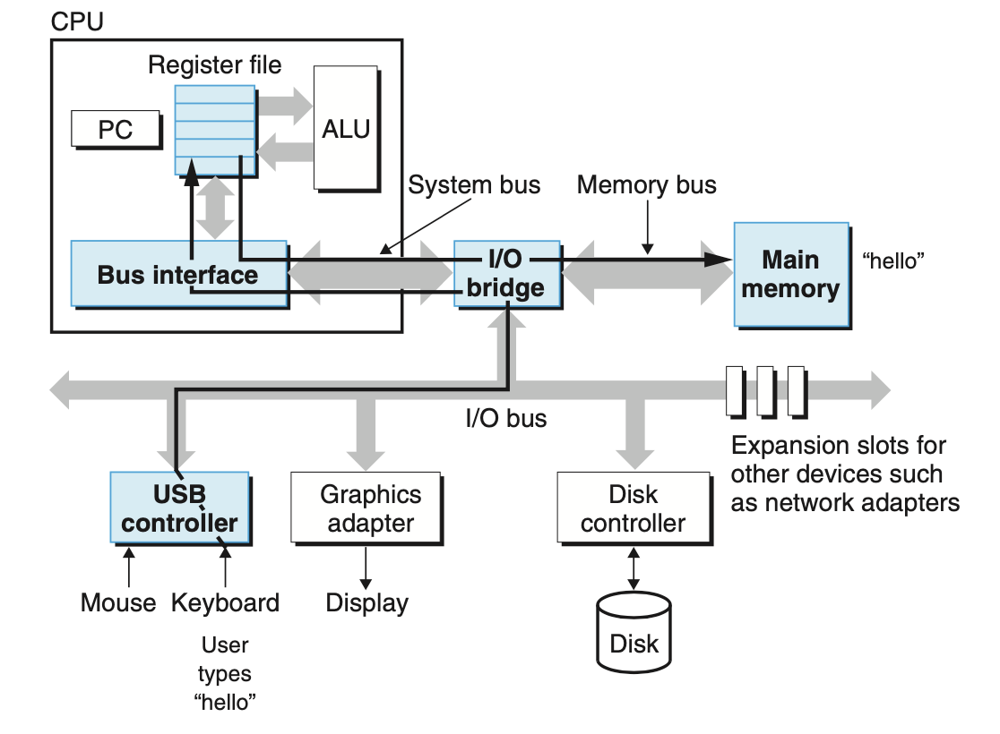
首先 shell 正在执行它自己的一些指令，等待用户输入。
在键盘上输入linux> ./hello时，shell 就会把每个字符读到寄存器文件中，接着反手就扔内存里面了。
当我们按下 ::ENTER::时，shell知道 我们输入完了，马上加载 hello 文件，具体就是执行一段指令，这段指令会做什么？ 拷贝存在硬盘里的hello文件里的 代码 和 数据，用 DMA（direct memory access）直接扔到内存里，没有经过处理器。
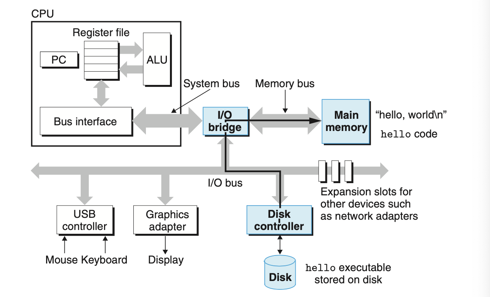
代码 数据 指令 都在内存里了，下一步就执行了。机器码将 hello,world\n从内存扔到寄存器文件，然后显示在屏幕上，大概就是下面这个样子
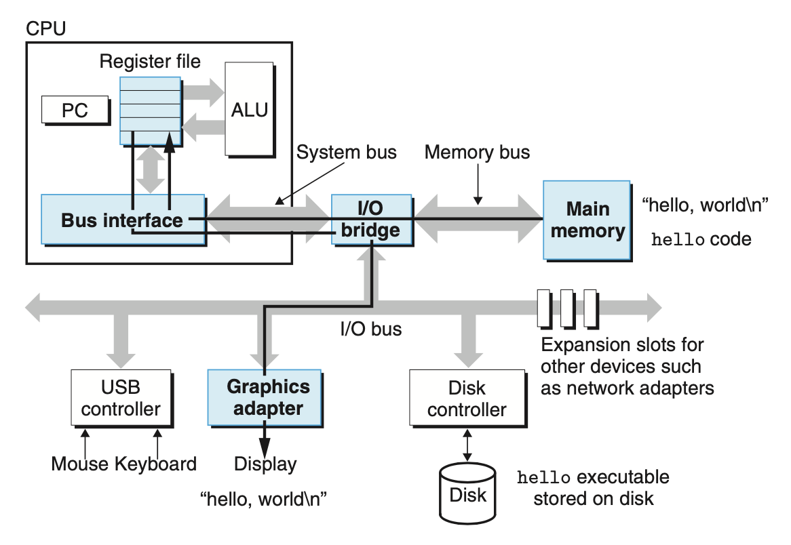
Caches Matter
从上面的一系列操作 会发现一个问题，系统会花费大量时间去拷贝东西。从一个程序员视角，大量的拷贝操作无疑会极大的降低效率。所以最初的系统设计者面临最大的问题就是如何让这种考来考去的操作变得更快。
通用的物理规律，越大的存储设备越慢，越快的设备越贵。举个简单的例子，磁盘驱动器也许比内存大一千倍，但从里面读一个单词的速度，可能要慢上一千万倍（有可能奥😨）。
为了解决处理器与内存间的鸿沟，系统设置这巧妙的引入的挺小挺快的存储设备，缓存。暂时的阶段性的存储一些处理器未来可能会用到的一些信息。 -（把PC挤到哪里去了？？？what？？？）-
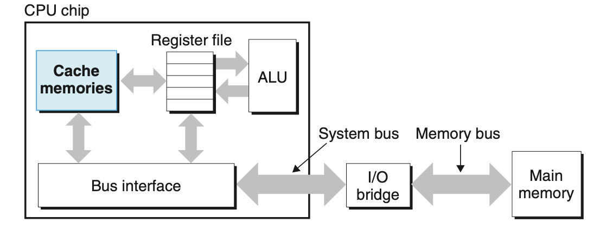
缓存背后的思想是系统局部数据的高效利用，即系统在局部区域访问代码和数据的趋势，以达到非常大的内存 和 非常快的内存效果。
存储设备构建的层次结构
在 处理器 与 大又慢的设备中间 放一个 小而快的存储设备（比如缓存）这个主意真的超级棒。目前来看，docker，浏览器，http等等 缓存无处不在，事实上，的确如此 每个计算机系统都是级联缓存这种方式
寄存器文件 占领 L0 级，L1 到 L3是内存缓存，L4 用作内存缓存，以此类推
级联缓存的思想是 每层仅存储了上一层所需的缓存
多级缓存
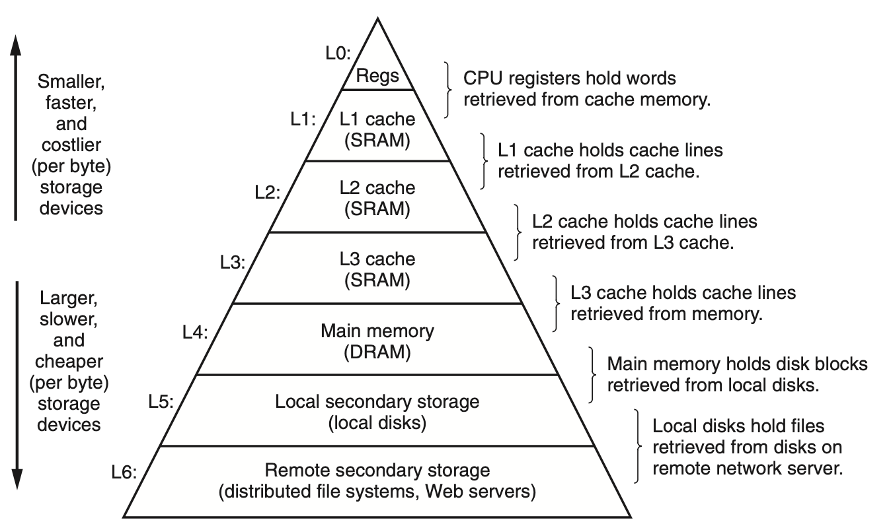
操作系统女王 统领硬件
回看我们的hello 程序例子，执行的一系列流程中，好像并不是 程序直接调用 键盘 显示器 内存等硬件设备，而是 依赖于操作系统对外提供的服务。
我们可以想象一下 操作系统是应用程序与硬件中间插入的软件层。所有操作或联系必须经过 中间的那 操作系统。
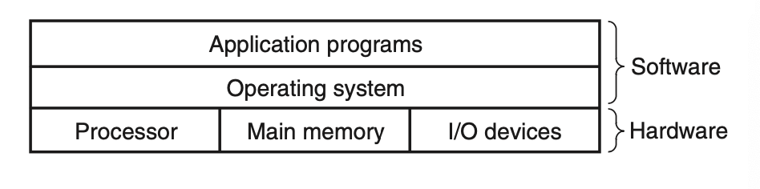
操作系统主要有两件事，1是防止程序滥用硬件资源 2是给程序提供简单统一的机制（可以抽象成就是API），因为低级的硬件设备千变万化且操作复杂。
那么他是怎么做到的呢？—— 抽象 ： 进程 、虚拟内存、文件
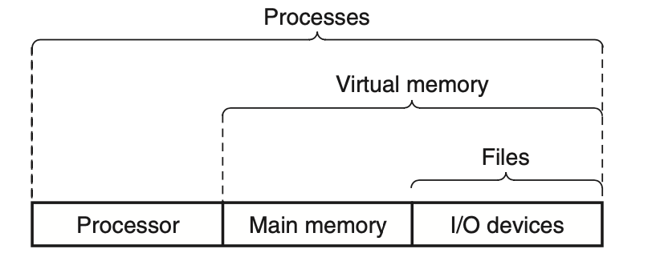
如图，将一切 IO 设备 抽象为文件，IO + 内存 抽象为 虚拟内存，IO + 内存 + 处理器 抽象为 进程
进程
当运行一个程序时，操作系统会给人一种假象，好像电脑上只跑着这一个程序。就好像程序独占了处理器 内存 和 IO 设备。处理器一条一条执行这个程序的指令，从无间断。程序中的 代码 跟 数据永远在内存里，随取随用 不用等待。这些假象的制造者： 进程，计算机科学史上 一个最重要且 最成功的思想。
一个进程 可以理解成 操作系统对运行中程序的一个抽象。多进程可以并发 且 每个进程都有硬件的使用权。同时 多个进程指令相互间时交叉的，大多数系统中 运行的进程数 会 多于 运行的 CPU 数量。
早起的系统只能支持单程序的运行，新的多核处理器可同时运行多个进程。但是 单CPU 也可以用处理器在多进程间切换的方式 看上去是并发的样子（处理器：只要我切换的速度够快 CPU 就看不出来我是单线程 ）
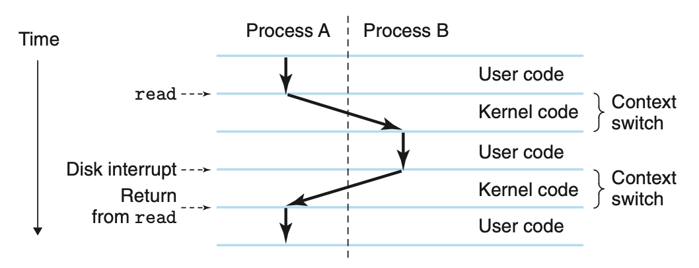
A ： shell 进程
B ： hello 进程
就像这样，操作系统掌管着处理器运行所需的所有信息，也就是context（程序执行所需的上下文），包括PC 当前值，寄存器文件和内存内容。单处理器一次智能执行一个程序，当操作系统想从一个进程切换到另一个进程的时候呢，就会执行一个 上下文切换的操作，保存当前 context ，加载另一个 context，从上次打断的地方继续进程的执行。
线程
我们会普遍认为一个进程只有一个控制流，但在现代系统中，一个进程实际上包含好多执行单元 称之为 线程，每个线程都运行在进程的context 中，共享代码和全局数据。
线程成为一个越来越重要的程序模型，因为并发的网络服务，因为多进程 多线程间更容易的数据分享，因为比进程更高效。多处理器系统中，多线程是可以让程序跑的更快的一个相当有效的方法。
虚拟内存
虚拟内存也是一种抽象（敲黑板 ，抽象），提供一种让每个进程独享内存这样的一种假象。每个进程看到的内存形式都是一样的，称之为虚拟地址空间。linxu 系统中的虚拟地址空间看起来是这样的（其他unix系统也差不多长这样）：
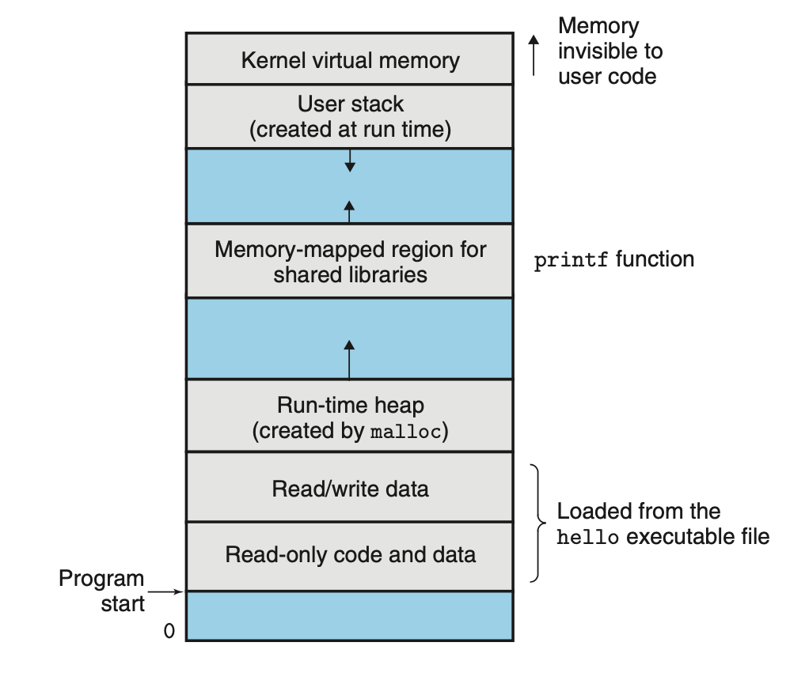
linux 系统中，最上面的地址空间是留给操作系统用的，存着所有进程共享的代码 和 数据。下面的地址空间 给用户用啦。注意，地址是由下至上递增的。也就是系统级的虚拟内存占据在地址最大的地方。
概览一下：
- 程序代码 + 数据：代码从所有进程的相同固定地址开始，然后是对应于全局C变量的数据位置。代码和数据区域会直接用可执行文件初始化一下。
- Heap 堆：紧接着代码和数据的就是一个运行时堆，与代码数据区域不同的地方在于，从进程运行开始时，给一个固定大小，随着程序的执行、动态分配和释放内存，区域大小也会伸缩。
- 共享库：地址空间中间那段存储一些共享的代码和数据，比如c的标准库，共享库内容很厉害，但有点难懂
- stack 栈：用户虚拟空间顶部的空间是编译器用来实现函数调用的用户栈。和堆一样，大小都会随着程序的执行伸缩，调用函数时 栈变大 函数返回后栈变小
- 内存虚拟空间：地址空间最顶部的区域是给内核用的。应用程序无法直接读取或调用这部分地址内容，要通过调用内核方法使用
让虚拟内存工作起来，需要硬件和操作系统间超级复杂交互，包括处理器将硬件转换成内存地址。
文件
文件就是一串字节。每个IO 设备 都可以建模成文件，系统中的输入输出操作通过/Unix IO/ 抽象为 读写 文件操作。
这种简单又优雅的文件概念非常有价值，统一了各式，使得相同程序可以用在不同的硬件系统上。
小插曲
THE LINUX
91年8月份，一个芬兰研究生 Linus Torvalds ，这个小伙子正式宣布一个新的类unix 系统内核 诞生啦！
From: torvalds@klaava.Helsinki.FI (Linus Benedict Torvalds)
Newsgroups: comp.os.minix
Subject: What would you like to see most in minix?
Summary: small poll for my new operating system
Date: 25 Aug 91 20:57:08 GMT
Hello everybody out there using minix -
I’m doing a (free) operating system (just a hobby, won’t be big and professional like gnu) for 386(486) AT clones. This has been brewing since April, and is starting to get ready. I’d like any feedback on things people like/dislike in minix, as my OS resembles it somewhat (same physical layout of the file-system (due to practical reasons) among other things).
I’ve currently ported bash(1.08) and gcc(1.40), and things seem to work. This implies that I’ll get something practical within a few months, and I’d like to know what features most people would want. Any suggestions are welcome, but I won’t promise I’ll implement them :-)
Linus (torvalds@kruuna.helsinki.fi)
用词非常谦虚诚恳，现在的linus 总喜欢在Twitter上怼人
系统间通过网络通信
我们先把系统想象成软硬件组合起来的一座孤岛。之间通过网络连接，其实网络也可以想象为一个IO 设备，相互做硬盘。
抽象在计算机系统中的重要性
抽象 在计算机科学领域是一个非常非常非常重要的概念。比如说，良好编程习惯的一个方面是为一组函数制定一个简单的应用程序接口（API），使程序员可以使用代码的时候不必深入研究其内部是怎么实现的。不同语言会有不同形式不同层级的抽象，像java的类声明，c函数的原型
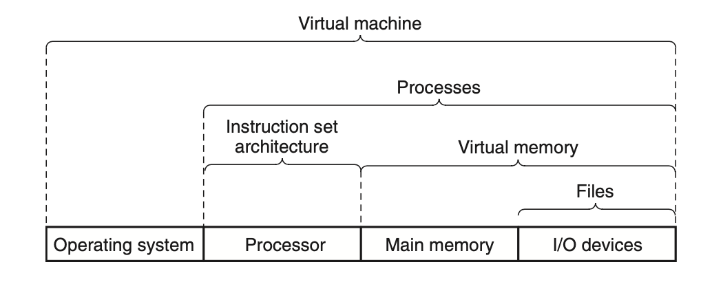
一层一层的抽象，最上面是虚拟机，涵盖一整个计算机，IBM 在1960s提出的这一概念。
小结
计算机系统是由软件 硬件组合起来 相互合作执行程序的一个小盒子，计算机内部的信息表示为比特组，根据不同的信息和查看方式表示不同内容。程序会被其他程序转换成不同的形式，从ASCII 码开始，被编译和链接形成可执行文件。
处理器从内存中读取执行二进制指令。因为计算机需要花大量时间从不同设备间拷贝数据，所以将其等级划分，最上面是CPU 寄存器，接下来是多层硬件缓存内存，DRAM 内存，硬盘。层级中处理快 开销大的放最上面，然后递减。上层设备用作下层设备的缓存。
操作系统内核作为硬件和应用程序的中间人，提供三个基本的抽象概念：
- IO 设备抽象为文件
- 内存 硬盘 抽象为虚拟内存
- 处理器 内存 IO设备 抽象为进程们